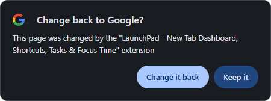

LaunchPad
LaunchPad is installed. One quick thing first.
When you open a new tab, Chrome may ask "Change back to Google?" This is normal for any new tab extension.
Click Keep it, the button on the right. Chrome highlights Change it back, and choosing it switches LaunchPad off.
Your browser may ask if you want to keep this change. Choose to keep it to use LaunchPad.

Clicked Change it back by mistake? Open your extensions page, find LaunchPad and switch it back on. Switched LaunchPad off by mistake? Open your extensions page, find LaunchPad and switch it back on.
Your extensions page is at this address:
Everything you add stays on this device.